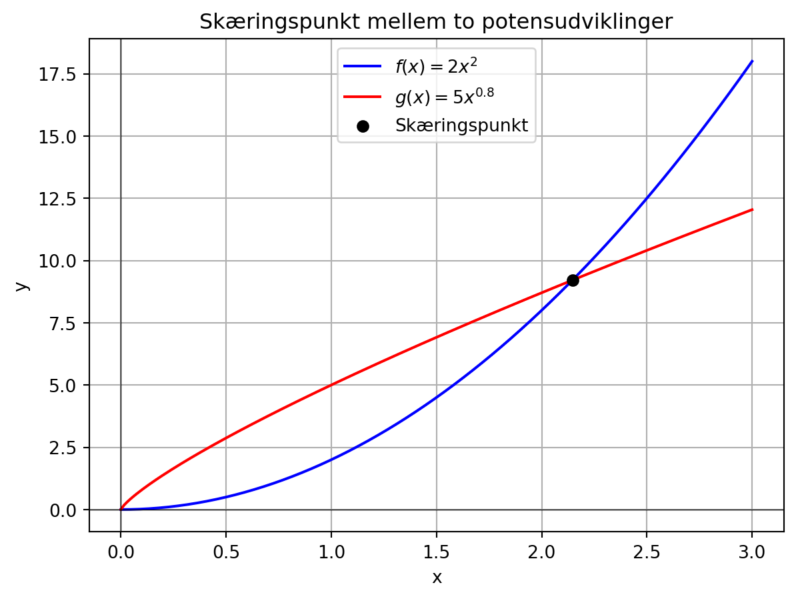

10 Potensfunktioner
10.1 Definition på potensfunktion og potensudvikling
Hvis \(a=1\), har vi en funktionsskrift på formen \(f(x)=b \cdot x^1 = b \cdot x\) og det er en lineær funktion med \(b\) som hældningskoefficient, så \(a=1\) er derfor ikke med i definitionen af potensfunktioner og potensudviklinger.
Bemærk, at en potensudvikling med \(b=1\) kaldes en potensfunktion. Bemærk også, at eftersom både definitionsmængden og værdimængden ikke antager negative værdier, findes grafen for \(f\) i begge tilfælde kun i første kvadrant.
Bevis
\[f(1)= b \cdot 1^a = b \cdot 1 = b\] \(\square\)
10.2 Vækstegenskab
Vi kan ikke som i tilfældet med lineære funktioner og eksponentieludviklinger se på \(f(x+1) = b \cdot (x+1)^a\).
Hvis eksempelvis \(a=2\) har vi, at
\[f(x+1) = b \cdot (x+1)^a = b \cdot (x^2+2x+ 1) = b \cdot x^2 + b \cdot (2x+1) = f(x) + b \cdot (2x+1) \] Det er svært at sige, hvad man kan konkludere om væksten ud fra det resultat.
Hvis \(a=-2\) bliver det næsten kun endnu værre
\[f(x+1) = b \cdot (x+1)^{-2} = \frac{b}{(x+1)^2} = \frac{b}{x^2+2x+ 1} \] og hvordan kommer man så videre herfra?
I stedet for at se på \(f(x+1)\) vil vi for potensudviklinger i stedet se på \(f(x \cdot k)\) og formulere følgende sætning:
Bevis
\(f(x \cdot k)= b \cdot (x \cdot k)^a = b \cdot x^a \cdot k^a = f(x) \cdot k^a\)
Sæt \(k=1+r_x\) og \(k^a = (1+r_y)\) og dermed får vi at:
\((1+r_x)^a=(1+r_y)\)
\[ \begin{aligned} (1+r_y) &= (1+r_x)^a \nonumber \Leftrightarrow \\ r_y &= (1+r_x)^a -1 \quad \text{og} \quad r_x =\sqrt[a]{1+r_y} - 1 \end{aligned} \] \(\square\)
Beviset kan også fremføres ved at huske, at den relative tilvækst skrives
\[ \begin{aligned} r_y&=\frac{\text{slutfunktionsværdi} - \text{begyndelsesfunktionsværdi}}{\text{begyndelsesfunktionsværdi}} \\ &=\frac{\text{slutfunktionsværdi}}{\text{begyndelsesfunktionsværdi}} - 1 \Leftrightarrow \\ 1+r_y &= \frac{\text{slutfunktionsværdi}}{\text{begyndelsesfunktionsværdi}} \end{aligned} \]
Vi fremskriver \(x\)-værdien og skriver slutværdi=\(x \cdot (1+r_x)\) og dermed \(\text{slutfunktionsværdi}= f(x \cdot (1+r_x))\). Begyndelsesværdien er uændret, så begyndelsesfunktionsværdi=\(f(x)\). Dette indsættes og vi får:
\[ \begin{aligned} 1+ r_y &= \frac{f(x \cdot (1+r_x))}{f(x)} = \frac{f(x) \cdot (1+r_x)^a}{f(x)} = (1+r_x)^a \end{aligned} \] Hvis vi bruger, at \(p_x=r_x \cdot 100\) og \(p_y=r_y \cdot 100\) får vi \[ \begin{aligned} p_y&= \left((1+r_x)^a -1\right) \cdot 100 \quad \text{og} \quad p_x=\left(\sqrt[a]{1+r_x} - 1 \right) \cdot 100 \end{aligned} \]
10.3 Skæringspunktet mellem graferne for to potensudviklinger
Hvis man har to potensudviklinger \(f(x) = b \cdot x^a\) og \(g(x)=d \cdot x^c\) og ønsker at bestemme skæringspunktet mellem graferne for de to funktioner skal man løse ligningen
\[ b \cdot x^a = d \cdot x^c \]
Hvis både \(a\) og \(c\) er positive og ikke ens, er den første og åbenlyse løsning \(x=0\). Men vi har jo defineret definitionsmængden til at være de positive tal, så det kan ikke bruges som \(x\)-koordinat for et evt. skæringspunkt. Hvis enten \(a\) eller \(c\) er mindre end 0 er funktionsværdien \(f(0)\) eller \(g(0)\) slet ikke defineret.
Vi ønsker at definere en generel formel, uanset om \(a\) og \(c\) er positive eller ej. Vi vil dog antage at \(a>c\). Løsningen af ligningen bliver så:
\[ \begin{aligned} b \cdot x^a &= d \cdot x^c \Leftrightarrow \\ \frac{x^a}{x^c} &= \frac{d}{b} \Leftrightarrow \\ x^{a-c} &= \frac{d}{b} \Leftrightarrow \\ x &= \sqrt[a-c]\frac{d}{b} \end{aligned} \]